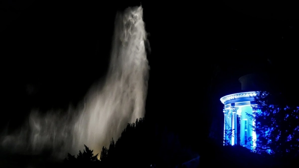
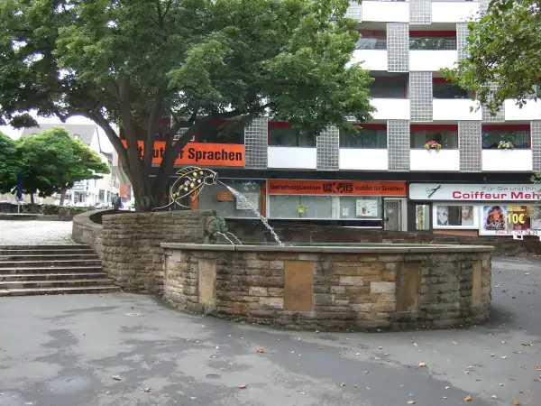
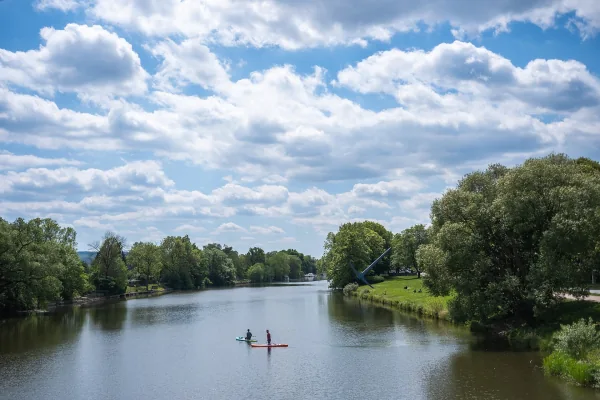

Start / Termine 2027
Aaron Schiele
geprüft am
geprüft am
Wasserspiele 2027: alle 49 Termine

Die Saison 2027 läuft vom 1. Mai bis 3. Oktober. Das Wasser fließt jeden Mittwoch und Sonntag und an jedem hessischen Feiertag, los geht es um 14.30 Uhr am Herkules. Gut eine Stunde später, um 15.45 Uhr, steigt unten am Schloss die Große Fontäne. Wie der Ablauf von Station zu Station geht und wo du am besten stehst, steht auf der Seite zu den Wasserspielen.
Mai 2027: 1., 2., 5., 6., 9., 12., 16., 17., 19., 23., 26., 27., 30.
Juni 2027: 2., 6., 9., 13., 16., 20., 23., 27., 30.
Juli 2027: 4., 7., 11., 14., 18., 21., 25., 28.
August 2027: 1., 4., 8., 11., 15., 18., 22., 25., 29.
September 2027: 1., 5., 8., 12., 15., 19., 22., 26., 29.
Oktober 2027: 3.
Mittwoch und SonntagFeiertag
Fünf Feiertage machen den Unterschied: Der 1. Mai fällt 2027 auf einen Samstag, Christi Himmelfahrt (6. Mai) und Fronleichnam (27. Mai) auf einen Donnerstag, Pfingstmontag ist der 17. Mai. An diesen Tagen laufen die Wasserspiele auch außer der Reihe. Der 3. Oktober ist ein Sonntag und der letzte Tag der Saison.
Beleuchtete Wasserspiele 2027
Die beleuchteten Wasserspiele am Abend gibt es 2027 am Freitag, 14. Mai, und Samstag, 15. Mai, mit Rahmenprogramm. Die Uhrzeiten und ob im Herbst ein zweiter Termin folgt, stehen noch nicht fest; beides kommt hierher, sobald es bekannt ist.
documenta 16 im Sommer 2027
Die documenta 16 läuft 100 Tage lang in der ganzen Stadt. Los geht es am 12. Juni, Schluss ist am 19. September. Es gibt Tages- und Zweitagestickets. Wer mit der Bahn anreist, spart während der Laufzeit 15 Prozent auf ICE und IC/EC nach Kassel; gebucht wird über den Link auf der FAQ-Seite der documenta. Was du jetzt schon wissen kannst, steht auf der Seite zur documenta 2027. Wenn du für die documenta übernachten willst, buche früh, im Sommer 2027 wird es voll.
Zissel 2027: 30. Juli bis 2. August

Der Zissel, das Volks- und Wasserfest an der Fulda, findet vom 30. Juli bis 2. August 2027 statt. Am Samstag, 31. Juli, ist der Drachenboot-Cup, Start ist um 9.30 Uhr. Das Programm veröffentlicht der Verein rechtzeitig vor dem Fest.
Was 2027 noch offen ist
| Termin | Stand |
|---|---|
| Uhrzeiten der beleuchteten Wasserspiele, zweiter Termin | noch nicht bekannt |
| Programm des Zissel | erscheint vor dem Fest |
| Weihnachtsmarkt 2027 | noch nicht bekannt |
| Programm der documenta 16 | noch nicht veröffentlicht |
Häufige Fragen
Wann sind die Wasserspiele 2027?
Vom 1. Mai bis 3. Oktober 2027, jeden Mittwoch, Sonntag und hessischen Feiertag ab 14.30 Uhr. Das sind 49 Termine.
An welchen Feiertagen laufen die Wasserspiele 2027 zusätzlich?
Am 1. Mai (Samstag), an Christi Himmelfahrt am 6. Mai, an Pfingstmontag am 17. Mai und an Fronleichnam am 27. Mai. Der 3. Oktober ist 2027 ohnehin ein Sonntag.
Wann ist die documenta 2027?
Sie beginnt am 12. Juni 2027 und endet am 19. September, nach 100 Tagen.
Wann ist der Zissel 2027?
Vom 30. Juli bis 2. August 2027 an der Fulda.
Wann sind die beleuchteten Wasserspiele 2027?
Am Freitag, 14. Mai, und Samstag, 15. Mai 2027. Die Uhrzeiten stehen noch nicht fest.
Quellen abgerufen am 12.11.2026
- Kassel Marketing Beleuchtete Wasserspiele
- Stadt Kassel Beleuchtete Wasserspiele · Anreise mit dem ÖPNV
- Hessen Kassel Heritage Wasserspiele
- documenta 16 Besuch und FAQ
- Zissel in Kassel e.V. Zissel in Kassel e.V. · Drachenboot-Cup
Weiterlesen

Wasserspiele Kassel
Wasserspiele Kassel im Bergpark Wilhelmshöhe: wann sie laufen, Ablauf mit Uhrzeiten, Route vom Herkules zur Fontäne, Eintritt frei, Anreise.
Weiterlesendocumenta 2027 Kassel
documenta 16 in Kassel: 12. Juni bis 19. September 2027, täglich 10 bis 20 Uhr. Ticketpreise, Bus und Bahn, Welcome Center und Anreise im Überblick.
Weiterlesen
Zissel 2027 Kassel
Zissel Kassel: Das Volks- und Wasserfest an der Fulda findet 2027 vom 30. Juli bis 2. August statt. Programm, Festgelände, Geschichte und Anreise.
Weiterlesen